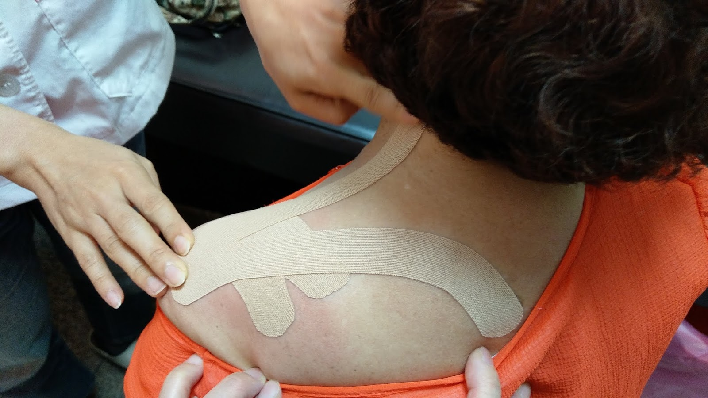
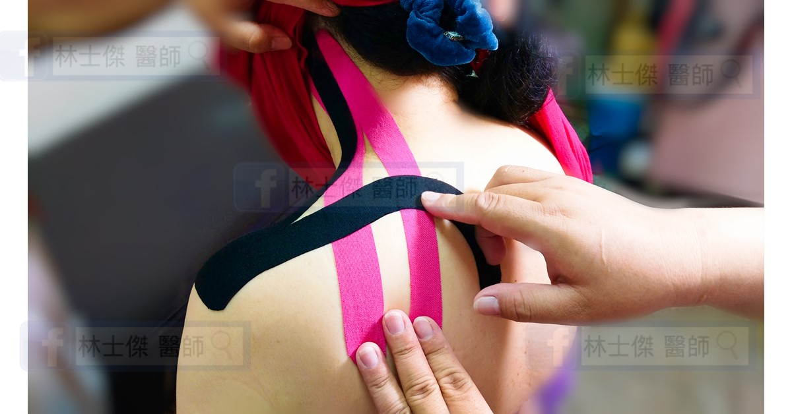

骨科仁心
早上起來脖子轉不動，
是落枕嗎？
「醫師，我只是睡一覺，怎麼脖子就不能轉了？」——問題通常不是那一覺，是那一覺之前的好幾個月。
本文改寫自舊站〈傑哥講骨：落枕〉（2018-08-16），內容重新整理並補充。
同事的媽媽落枕，脖子動彈不得，痛到整晚沒睡，一早就來報到。
貼紮處理完，阿姨轉了轉脖子：「林醫師你ㄟ變魔術喔！我藥嘛沒吃、針嘛沒注，怎麼就不痛了？」
那不是魔術，是把過度收縮的肌肉放鬆掉而已。
多數人早上轉不動脖子，第一個念頭就是落枕，而且大部分時候是對的。 但在把它當落枕處理之前，得先確認它真的是落枕。
不是每種「脖子轉不動」都是落枕
三種狀況都會讓你早上起不來、轉不動，但來源完全不同，處理方式也不一樣。 光看「脖子很痛、轉不動」這幾個字，三種長得一模一樣。
| 狀況 | 怎麼變化 | 診間裡怎麼確認 |
|---|---|---|
| 落枕 | 幾天內逐漸好轉 | 醫師動手檢查，確認神經沒有被影響 |
| 頸椎神經壓迫 | 時好時壞，特定姿勢加重 | 檢查神經有沒有被壓到，必要時看影像 |
| 肌筋膜疼痛 | 反覆發作、長期存在 | 用手找出特別敏感的那幾個點，並排除前兩種 |
這幾種也可能同時存在，實際還是要由醫師檢查判斷。
真的是落枕的話，發生了什麼
落枕的正式說法叫做急性頸部肌肉痙攣，白話講就是肌肉抽筋卡住了：頸肩那幾條肌肉維持同一個姿勢太久、又本來就緊繃，某一下就鎖住不放。
- 枕頭高度不合、趴睡——頭被折著或轉到底，一轉就是好幾個小時。
- 長時間低頭——頭往前多一寸，後頸的負擔就多好幾公斤。
- 壓力——緊繃時會不自覺聳肩，上斜方肌整天在收縮。
- 在沙發或車上睡著——脖子完全沒有支撐點。有位阿姨反覆落枕，追問之下是常看電視看到睡著。
睡姿只是壓垮駱駝的最後一根稻草。 所以換一顆貴的枕頭不會解決問題——枕頭只管你睡著的那幾個小時，白天低頭的那幾個小時才是真正消耗肌肉的地方。
怎麼治療？
先確認是不是單純肌肉的問題
問清楚痛的範圍會不會往手跑、有沒有麻或無力，再動手檢查脖子—— 這一段有幾個特定的檢查手法，用來看神經有沒有被牽扯到，醫師會依病史與症狀評估並安排檢查。 先排除神經，才能安心地當肌肉來處理。
肌能系貼紮
這是我處理急性落枕最常用的一招，就是常看到的那種彩色運動貼布。 貼紮不是把脖子固定住，而是提供一個溫和的支撐與皮膚回饋，讓那條一直收縮的肌肉願意放鬆下來。 很多人貼完當下轉頭的角度就回來一些，那不是心理作用，是肌肉不再全力抵抗。


其餘該做的
- 熱敷：降低肌肉張力。急性期腫脹明顯的話，先冰再熱。
- 溫和伸展：往不痛的方向慢慢帶，停在緊但可忍受的位置。
- 止痛與肌肉鬆弛藥物：必要時短期使用，讓你能開始活動。
- 把根源處理掉：換枕頭、調整螢幕高度、別在沙發睡著。
不要用力轉一轉、扳一下。 肌肉正在抽筋卡住的時候硬扳，只會讓它收得更緊，也可能拉傷更多。 沒有確認過頸椎狀況之前，不要讓任何人扳你的脖子。
單純落枕通常三到七天會明顯改善。 如果一週過去完全沒有起色，就不該再當落枕處理了。
建議盡快就醫的情形
出現以下任一項，不要當落枕自己熱敷觀察：
- 手臂或手指有麻、刺、無力——要評估頸椎神經。
- 頸部僵硬合併發燒、頭痛——需要排除感染。
- 車禍、跌倒等外傷之後——先排除骨折或韌帶損傷。
- 超過一到兩週沒有改善，或反覆發作。
- 合併走路不穩、手變笨拙、大小便異常——這是要立刻處理的警訊。
先確認是肌肉還是神經，再決定要放鬆還是要檢查。 單純落枕幾天就會好；好不了的那種，本來就不是落枕。
痛消失只代表這次卡住的狀況解除，肌肉的耐受度並沒有跟著變好。 手有麻、或一週還沒好轉，就別再自己熱敷觀察——門診檢查一次，先把神經的問題排除掉，也才知道接下來要練什麼。 會自己好的那種本來就會好；不會自己好的那種，拖久了只是更難處理。
本文為一般衛教資訊，不能取代醫師的診察、診斷或治療。 文中的分辨方式僅供初步參考，實際診斷需要理學檢查與影像佐證。 每個人的狀況都不同，請與您的主治醫師討論後再決定治療方式。